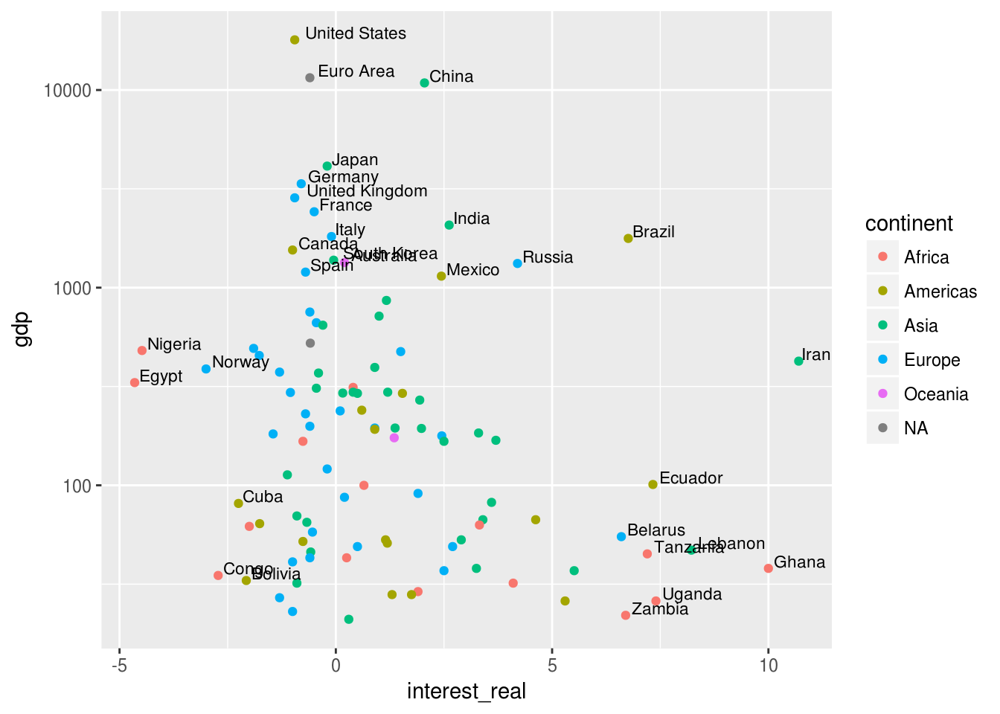
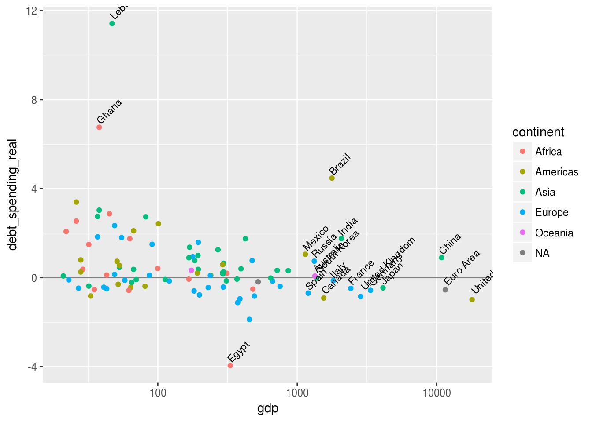

Então, esses dias uns amigos estavam comentando numa rede social sobre o juro brasileiro, que seria o maior do mundo conforme certa noticia, e que tal informação não estaria completa visto que a notícia fala apenas das 40 maiores economias - e o tradingeconomics, com informação de 181 países, entrou no baile.
Bom, resolvi pegar os dados e fazer uns experimentos - tudo usando a linguagem R. Inicialmente transformei a tabela da página inicial do tradingeconomics num arquivo CSV e o carreguei (ver tradingecon.csv, valores consultados em 22/dez/2016)
tab <- read_csv("../../../static/data/2016/tradingecon.csv")Juro real é o juro nominal menos a inflação:
tab$interest_real <- tab$interest - tab$inflationE assim podemos ver1 quais são os países com maior taxa de juros (real) - coluna interest_real:
vz<- tab %>% arrange(desc(interest_real)) %>%
select(country, gdp, interest, inflation, interest_real, debt_gdp, population, continent) %>%
top_n(20, interest_real)
vz| country | gdp | interest | inflation | interest_real | debt_gdp | population | continent |
|---|---|---|---|---|---|---|---|
| Gambia | 1 | 23.00 | 7.43 | 15.57 | 50.70 | 1.99 | Africa |
| Mongolia | 12 | 15.00 | 0.20 | 14.80 | 77.40 | 3.06 | Asia |
| Seychelles | 1 | 12.40 | -0.40 | 12.80 | 60.00 | 0.09 | Africa |
| Zimbabwe | 14 | 10.69 | -1.10 | 11.79 | 77.00 | 15.60 | Africa |
| Iran | 425 | 20.00 | 9.30 | 10.70 | 16.36 | 78.80 | Asia |
| Ghana | 38 | 25.50 | 15.50 | 10.00 | 67.60 | 27.41 | Africa |
| Djibouti | 2 | 12.70 | 3.70 | 9.00 | 53.70 | 0.89 | Africa |
| Cape Verde | 2 | 7.50 | -1.30 | 8.80 | 123.00 | 0.52 | Africa |
| Afghanistan | 19 | 15.00 | 6.69 | 8.31 | 6.60 | 27.10 | Asia |
| Lebanon | 47 | 10.00 | 1.78 | 8.22 | 139.00 | 4.65 | Asia |
| Benin | 8 | 4.50 | -3.40 | 7.90 | 20.80 | 10.88 | Africa |
| Chad | 11 | 2.45 | -5.00 | 7.45 | 25.70 | 14.04 | Africa |
| Uganda | 26 | 12.00 | 4.60 | 7.40 | 34.40 | 39.03 | Africa |
| Ecuador | 101 | 8.38 | 1.05 | 7.33 | 33.10 | 16.28 | Americas |
| Tanzania | 45 | 12.00 | 4.80 | 7.20 | 39.90 | 48.80 | Africa |
| Armenia | 11 | 6.50 | -0.60 | 7.10 | 42.23 | 2.99 | Asia |
| Brazil | 1775 | 13.75 | 6.99 | 6.76 | 66.23 | 204.45 | Americas |
| Mali | 13 | 4.50 | -2.20 | 6.70 | NA | 17.60 | Africa |
| Zambia | 22 | 15.50 | 8.80 | 6.70 | 31.00 | 15.47 | Africa |
| Haiti | 9 | 20.00 | 13.30 | 6.70 | 26.45 | 10.91 | Americas |
Então até parece que o Brasil não está tão mal, ficando na 17a posição, com um juro real de 6.76%. Gambia está no topo, com 15.57%. Mas também, combinar Gambia (PIB de 1bi) com Brasil (PIB de 1,7tri) é injusto. Então resolvi estabelecer uma linha de corte em 20bi pra ficar um pouco mais justo (Note-se que este filtro inclui as 110 maiores economias de um total de 181 listadas no tradingeconomics).
t2<- filter(tab, gdp>20)
vz<- t2 %>% arrange(desc(interest_real)) %>%
select(country, gdp, interest, inflation, interest_real, debt_gdp, population, continent) %>%
top_n(20, interest_real)
vz| country | gdp | interest | inflation | interest_real | debt_gdp | population | continent |
|---|---|---|---|---|---|---|---|
| Iran | 425 | 20.00 | 9.30 | 10.70 | 16.36 | 78.80 | Asia |
| Ghana | 38 | 25.50 | 15.50 | 10.00 | 67.60 | 27.41 | Africa |
| Lebanon | 47 | 10.00 | 1.78 | 8.22 | 139.00 | 4.65 | Asia |
| Uganda | 26 | 12.00 | 4.60 | 7.40 | 34.40 | 39.03 | Africa |
| Ecuador | 101 | 8.38 | 1.05 | 7.33 | 33.10 | 16.28 | Americas |
| Tanzania | 45 | 12.00 | 4.80 | 7.20 | 39.90 | 48.80 | Africa |
| Brazil | 1775 | 13.75 | 6.99 | 6.76 | 66.23 | 204.45 | Americas |
| Zambia | 22 | 15.50 | 8.80 | 6.70 | 31.00 | 15.47 | Africa |
| Belarus | 55 | 18.00 | 11.40 | 6.60 | 27.30 | 9.50 | Europe |
| Yemen | 37 | 15.00 | 9.49 | 5.51 | 49.95 | 26.83 | Asia |
| El Salvador | 26 | 4.48 | -0.82 | 5.30 | 64.16 | 6.13 | Americas |
| Dominican Republic | 67 | 5.50 | 0.88 | 4.62 | 45.61 | 9.98 | Americas |
| Russia | 1326 | 10.00 | 5.80 | 4.20 | 17.70 | 146.30 | Europe |
| Ivory Coast | 32 | 4.50 | 0.40 | 4.10 | 36.41 | 22.67 | Africa |
| Iraq | 169 | 4.00 | 0.30 | 3.70 | 37.02 | 35.87 | Asia |
| Sri Lanka | 82 | 7.00 | 3.40 | 3.60 | 76.00 | 20.96 | Asia |
| Uzbekistan | 67 | 9.00 | 5.60 | 3.40 | 11.00 | 31.19 | Asia |
| Kenya | 63 | 10.00 | 6.68 | 3.32 | 52.80 | 44.40 | Africa |
| Kazakhstan | 184 | 12.00 | 8.70 | 3.30 | 23.30 | 17.40 | Asia |
| Jordan | 38 | 3.75 | 0.50 | 3.25 | 93.40 | 9.53 | Asia |
Daí o Brasil passa para a 7a posição. É possível ver também os países que menor juros têm:
vz<- t2 %>% arrange(interest_real) %>%
select(country, gdp, interest, inflation, interest_real, debt_gdp, population, continent) %>%
top_n(-10, interest_real)
vz| country | gdp | interest | inflation | interest_real | debt_gdp | population | continent |
|---|---|---|---|---|---|---|---|
| Venezuela | 510 | 22.48 | 180.90 | -158.42 | 49.80 | 30.62 | Americas |
| Angola | 103 | 16.00 | 41.15 | -25.15 | 36.50 | 25.79 | Africa |
| Libya | 29 | 3.00 | 27.40 | -24.40 | 6.10 | 6.28 | Africa |
| Argentina | 548 | 24.75 | 40.50 | -15.75 | 48.40 | 43.13 | Americas |
| Sudan | 84 | 14.20 | 29.49 | -15.29 | 79.00 | 40.24 | Africa |
| Egypt | 331 | 14.75 | 19.40 | -4.65 | 85.00 | 83.40 | Africa |
| Nigeria | 481 | 14.00 | 18.48 | -4.48 | 11.50 | 182.20 | Africa |
| Norway | 388 | 0.50 | 3.50 | -3.00 | 31.70 | 5.21 | Europe |
| Congo | 35 | 7.00 | 9.72 | -2.72 | 19.69 | 71.40 | Africa |
| Cuba | 81 | 2.25 | 4.50 | -2.25 | 17.10 | 11.24 | Americas |
Destacam-se entre eles os países com inflação alta, em especial a Venezuela. Vamos então tentar visualizar como se comportam os juros (reais) dos países frente aos seus PIBs (removendo os países com juros < -10% a.a., pois estamos especialmente interessados em países com juros altos)
t2<- filter(tab, gdp>20, interest_real> -10)
gg<- ggplot(t2)
gg<- gg + scale_y_log10()
gg<- gg + aes(x= interest_real, y=gdp)
gg + geom_point(aes(colour= continent)) +
geom_text(data=filter(t2, gdp>1000 | interest_real< -2 | interest_real> 6), aes(label=country), hjust=-0.1, vjust=-0.1, size=3)
Note-se que o Brasil já está um tanto fora do padrão no quadrante superior direito.
Dispêndio total com juros
Mas prestando atenção nas outras variáveis disponíveis há uma que parece promissora: a da dívida em relação ao PIB (debt_gdp). Afinal se temos a dívida e o juros, podemos saber o quanto um pais deve dispender para que sua dívida não aumente2 (o valor do juro anual em relação ao montante da dívida). Assim calcularemos o debt_spending_real
tab$debt_spending_real <- (tab$interest_real/100) * tab$debt_gdp
t2<- filter(tab, gdp>20)
vz<- t2 %>% arrange(desc(debt_spending_real)) %>%
select(country, gdp, interest, inflation, interest_real,
debt_gdp, debt_spending_real, population, continent) %>%
top_n(20, debt_spending_real)
vz| country | gdp | interest | inflation | interest_real | debt_gdp | debt_spending_real | population | continent |
|---|---|---|---|---|---|---|---|---|
| Lebanon | 47 | 10.00 | 1.78 | 8.22 | 139.00 | 11.425800 | 4.65 | Asia |
| Ghana | 38 | 25.50 | 15.50 | 10.00 | 67.60 | 6.760000 | 27.41 | Africa |
| Brazil | 1775 | 13.75 | 6.99 | 6.76 | 66.23 | 4.477148 | 204.45 | Americas |
| El Salvador | 26 | 4.48 | -0.82 | 5.30 | 64.16 | 3.400480 | 6.13 | Americas |
| Jordan | 38 | 3.75 | 0.50 | 3.25 | 93.40 | 3.035500 | 9.53 | Asia |
| Tanzania | 45 | 12.00 | 4.80 | 7.20 | 39.90 | 2.872800 | 48.80 | Africa |
| Yemen | 37 | 15.00 | 9.49 | 5.51 | 49.95 | 2.752245 | 26.83 | Asia |
| Sri Lanka | 82 | 7.00 | 3.40 | 3.60 | 76.00 | 2.736000 | 20.96 | Asia |
| Uganda | 26 | 12.00 | 4.60 | 7.40 | 34.40 | 2.545600 | 39.03 | Africa |
| Ecuador | 101 | 8.38 | 1.05 | 7.33 | 33.10 | 2.426230 | 16.28 | Americas |
| Croatia | 49 | 2.50 | -0.20 | 2.70 | 86.70 | 2.340900 | 4.23 | Europe |
| Dominican Republic | 67 | 5.50 | 0.88 | 4.62 | 45.61 | 2.107182 | 9.98 | Americas |
| Zambia | 22 | 15.50 | 8.80 | 6.70 | 31.00 | 2.077000 | 15.47 | Africa |
| Serbia | 37 | 4.00 | 1.50 | 2.50 | 73.40 | 1.835000 | 7.11 | Europe |
| Belarus | 55 | 18.00 | 11.40 | 6.60 | 27.30 | 1.801800 | 9.50 | Europe |
| India | 2074 | 6.25 | 3.63 | 2.62 | 67.20 | 1.760640 | 1254.02 | Asia |
| Kenya | 63 | 10.00 | 6.68 | 3.32 | 52.80 | 1.752960 | 44.40 | Africa |
| Iran | 425 | 20.00 | 9.30 | 10.70 | 16.36 | 1.750520 | 78.80 | Asia |
| Greece | 195 | 0.00 | -0.90 | 0.90 | 176.90 | 1.592100 | 10.86 | Europe |
| Ukraine | 91 | 14.00 | 12.10 | 1.90 | 79.00 | 1.501000 | 42.76 | Europe |
Na tabela acima podemos ver que o Brasil agora é o 3o colocado, atrás apenas de Líbano e Gana, sendo que o PIB desses países é de aproximadamente 1/40 o do Brasil (sim, continuamos desconsiderando países com PIB < 20bi US$). Note-se também que o valor do gasto estimado com juros (coluna debt_spending_real) do Brasil é de 4.47, o que significa que o governo Brasileiro teria que gastar 4.47% do PIB no pagamento de juros para que o montante permaceça constante (ou seja, para que a dívida não aumente).
Bom, então podemos visualizar a relação entre o dispêndio anual (teórico) em juros e a taxa básica de juros das diferentes economias:
t2<- filter(tab, gdp>20, interest_real> -10)
gg<- ggplot(t2)
gg<- gg + aes(x= interest_real, y=debt_spending_real, size=gdp)
gg + geom_point(aes(colour= continent)) + geom_text(data=filter(t2, debt_spending_real>2.5 | debt_spending_real< -2 | interest_real< -4 | interest_real> 10), aes(x= interest_real, y=debt_spending_real, label=country), hjust=-0.1, vjust=-0.1, size=3)
Ou então entre o juro e o PIB:
gg<- ggplot(t2)
gg<- gg + aes(x= gdp, y=debt_spending_real)
gg<- gg + geom_hline(yintercept = 0, colour="gray50")
gg + geom_point(aes(colour= continent)) + geom_text(data=filter(t2, gdp>1000 | debt_spending_real>4 | debt_spending_real< -2), aes(x=gdp, y=debt_spending_real, label=country), hjust=-0.1, vjust=-0.1, size=3, angle=45)E aqui utilizando uma escala logaritmica para o PIB:
gg<- gg + scale_x_log10()
gg + geom_point(aes(colour= continent)) + geom_text(data=filter(t2, gdp>1000 | debt_spending_real>4 | debt_spending_real< -2), aes(x=gdp, y=debt_spending_real, label=country), hjust=-0.1, vjust=-0.1, size=3, angle=45)
E daí da pra ver que sim, o Brasil se destaca…
A coluna gdp (PIB) está em US$ bilhões, a coluna population (população) está em milhões e as demais em pontos percentuais.↩
É importante ressaltar que a taxa básica de juros de uma economia pode não refletir a taxa de juros (média) que o país deve pagar pelo montante de sua dívida visto que a dívida normalmente é contratada ao longo de diversos anos e a taxa básica de juros pode variar, e bastante, durante este período.↩